P053 · 10.5 （ADC）定时器触发¶
课程：铁头山羊 STM32 入门教程（新版）
10.5 [ADC]定时器触发¶
定时器触发的概念与实验思路¶
各位同学大家好，我是铁头山羊，今天呢我们来学习一下第十章的第五节，本节课呢我们要讲的内容是，ADC模块的一个定时器触发，我们首先来解释一下，这个定时器触发的一个概念，那到底什么是定时器触发呢，要想解释清楚这个问题呢，我们得回顾一下上期视频我们所做的那个实验，在上期视频的过程中呢，我们使用一个光敏传感器模块来产生模拟信号。然后呢把产生的这个模拟信号，通过单片机的pa0，
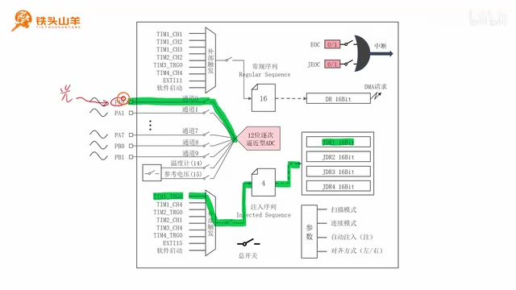
框图展示了常规序列的触发来源：除软件启动外，还列出多个定时器通道和 TRGO。 · 原片 00:30
这个引脚输入到我们的ADC当中，我们使用这个ADC的通道零，对这个模拟信号进行转换，所以呢我们把这个通道零写到了，我们常规序列里面的第一行，但是我们想要启动这个常规序列，是不是得通过左边给它输入一个上升沿啊。我们怎么去产生这么一个上升沿呢，可以通过左边的这一部分，比如说在上期视频的过程中呢，我们通过这个软件启动的方式，从这里直接给我们的常规序列发送了一个脉冲。那发送完这个脉冲之后，这个常规序列是不是就被启动了，但是从这个图里边我们可以看到哈。除了这种软件启动的方式之外，上面呢还有几种别的启动方式，其中这些这里的前六种呢都是跟定时器有关的。比如说定时器一的通道一，通道二和通道三，以及定时器二的通道二，还有定时器三的TRGO 信号，以及这个定时器四的通道四，这些都是跟定时器有关的，我们把使用定时器去产生，这个ADC的外部触发信号的这种方式呢，叫做定时器触发，刚才呢我们已经了解了这个定时器触发的概念，那么下一步呢，我们就通过这个定时器来产生外部触发信号。在上期视频的过程中呢，我们使用了常规序列，那本期视频呢为了练手，我们使用下面的这个注入序列，我们还是把这个光敏传感器的模拟输出。接到我们单片机的pa0，这个引脚上，PA0 对应对应的是ADC的通道零，所以呢我们应当把这个通道零写入到。
TRGO 的 Update 模式与定时采样¶
我们注入序列里边的第一行，然后呢我们这个外部触发信号呢，选择定时器一的TRGO，通过定时器一的TRGO来产生脉冲，从而去启动这个注入序列，因为我们这个注入序列一共有四行哈。
刚才呢我们把这个通道零写入到了第一行，所以当这个注入序列执行完成之后，这个通道零转换的结果呢，会被保存到JDR1这个寄存器里边，所以我们只需要通过这个JDR1，把这个结果给它读出来就可以了。刚才呢我们用到了这个定时器一的TRGO。来产生外部触发信号，那现在呢我们就来复习一下，这个TRGO的一个概念，其实呢这里所说的这个TRGO 信号呢，跟我们定时器的从模式控制器有关，不知道大家还记不记得，什么是定时器的从模式控制器，我们来看上面的这么一张图哈。在这张图里面呢，这一部分表示定时器的一个时基单元，然后呢在时基单元的左上方，这个位置呢，就是我们定时器的一个从模式控制器，
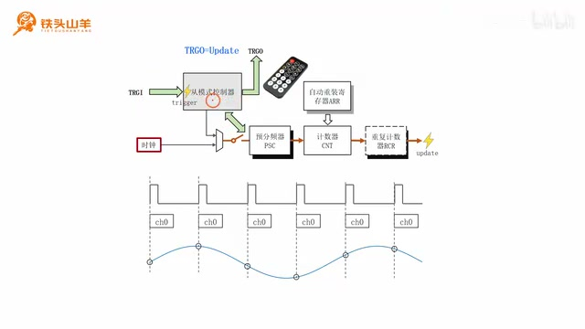
图中标出定时器从模式控制器及其 TRGO 输出，可将控制信号送往其他外设。 · 原片 03:04
我们曾经把这个从模式控制器呢，比作一个红外接收头，加上一个红外遥控器的组合，其中这个TRGO 信号呢，叫做从门式控制器的一个触发输出，它就相当于这么一个红外遥控器，我们可以通过这个TRGO呢，向外输出控制信号去控制别的模块，比如说我们可以用它来控制另外一个定时器。
我们使用这个定时器去控制另外一个定时器，这个就叫做定时器的级联，另外呢，这个TRGO还可以用来控制其他的偏向外设，比如说本章我们学习的这个ADC。我们可以使用这个t r go呢，作为ADC的一个外部触发信号，然后呢我们再来回顾一下，对于这个TRGO来说呢，它有八种不同的工作模式，这八种工作模式里边呢，我们过去只学习了其中的两种，今天呢我们要使用这个TRGO的update模式，我们先来回顾一下这个update模式到底是什么。。
实验目标与课程安排¶
其实这个update模式非常简单啊。就是当下边的这个时基单元，通过这个位置产生了一个update事件之后，TRGO 上就会对外输出一个脉冲，假设我们让这个我们设置一下这个时基单元哈。让这个update事件每1 毫秒发生一次。那么这个TRGO 上就会出现一系列，以1 毫秒为间隔的这么一个脉冲信号。
就是这样的一个信号，每一个脉冲之间的间隔呢是1 毫秒。然后我们把这个波形呢画到下边，用这条曲线呢来表示，这个TRGO 上的一个信号，我们把这个TRGO的信号呢，
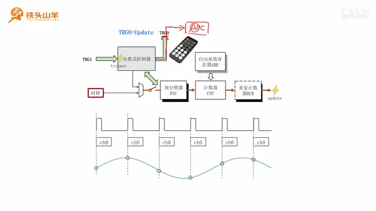
时序图把每毫秒一次的 TRGO 上升沿、注入序列执行和采样点对应起来。 · 原片 04:42
给它输入到ADC的这个外部触发输入上啊。所以呢，每当这个TRGO 上出现一个上升沿的时候，我们这个注入序列是不是就会被执行一遍，我们来看这些位置都是TRGO的上升沿。所以每当出现这么一个上升沿的时候，我们的这个注入序列就会被执行一遍，我们在这个注入系列里边呢，只写入了这个通道零，所以呢这个通道零会被转换，
因此呢每一次转换，我们就会得到这个模拟信号上的一个点。所以我们就会得到一系列，以毫秒为间隔的这么一个点，然后呢我们再用曲线把这些点连接起来，是不是就可以得到我们这个模拟信号的，一个图像了，本节课呢我们要做的这个实验，就是使用刚才的原理，在我们的电脑上去绘制，一条光敏传感器模块的一条曲线，我们还是使用这个光敏传感器模块，去产生模拟信号，然后呢，我们把这个模拟信号接到单片机的PA0上，也就是我们单片机ADC的这个通道零。我们使用ADC，把这个模拟信号转换成数字信号之后，把这个结果呢通过单片机的USART1。也就是串口一发送给电脑，然后我们在电脑上呢，去绘制这个光敏传感器模块的一个电压曲线。我们最终达到的这个实验效果是这样的哈。刚才呢我们不是通过单片机的这个串口。
连接实验电路¶
已经把转换的数据发送到电脑上了吗。所以现在呢我们就使用这条曲线，
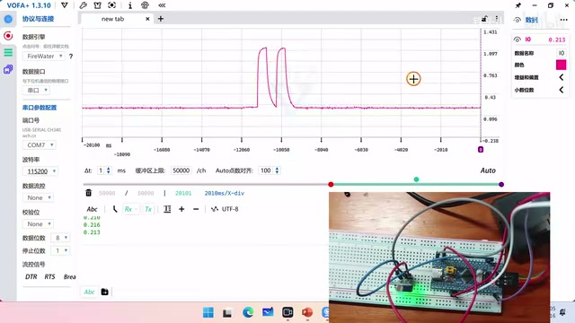
演示画面显示光敏传感器输出随光照变化而形成的曲线。 · 原片 06:10
来表示我们采到的这个数据，当我们去改变这个光照强度的时候，我们就可以看到这个光敏传感器模块的输出，电压呢就会发生变化，我们就会得到这么一条曲线，
本套视频所需要的所有材料，都包含在这个开发套件包里，大家可以扫描屏幕上的二维码，进入到我们的淘宝店铺来购买它，购买套件之后，你将获得课程所有的课件和源码，还能加入答疑群和up直接交流，明确了本次实验的目的之后呢，下面我们来介绍一下本节课的一个课程安排，本节课呢我们将分成以下六个部分来讲，首先第一部分呢我们先来连接我们的实验电路。然后第二部分，因为本次实验的过程中，我们需要使用串口，把这个转换完成的数据发送到电脑上，所以第二步我们就来初始化一下这个串口，然后第三部分呢，因为我们这个注入序列，需要使用这个定时器一的TRGO，这个信号呢来启动对吧。所以呢我们第三步就是去配置定时器，四一的这个TRGO，然后第四部分呢，我们来介绍一下，跟注入序列相关的一些编程接口，第五部分呢我们对我们的ADC进行初始化，第六部分，我们把这个数据转换的结果呢给它读出来，然后发送到电脑上，下面呢我们从第一部分开始，首先我们先来连接我们的这个实验电路，本次实验我们用到这个电路图呢，还是非常简单的，我们需要连接这么几个模块，分别是这里的这个光敏传感器模块，和下面的这个USB 转 TTL模块，首先呢我们先来连接这个光敏传感器模块，我们需要把光敏传感器模块的这个GND，连接到我们单片机的GND，然后呢这个VCC我们需要连单片机的3.3伏。
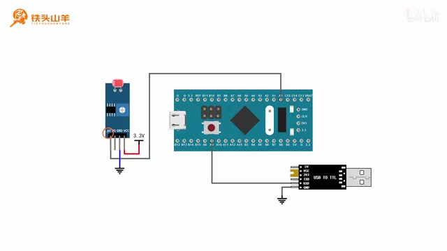
接线图展示光敏模块接到 PA0，以及单片机 TX 接 USB 转 TTL 的 RX。 · 原片 07:52
还有这个AO，这个AO呢代表模拟输出，我们需要把这个光敏传感器模块的模拟输出，连接到我们单片机的这个pa0引脚上，那除此之外呢，我们需要使用串口把这个结果呢发送给电脑。所以我们需要在电脑和我们这个单片机的串口。
初始化 USART1¶
之间接一个USB 转 TTL模块，因为我们只需要通过这个单片机呢，向外发送数据，所以呢我们只接这个单片机的TS引脚，就可以了。也就是这里的这个PA9，我们把这个pa9呢给它接到我们USB 转 TTL模块。的这个RSD引脚上，这样呢我们这个电路图就完成了。那根据这个电路图呢，我们就得到了本次实验的我们这个接线图，下面呢大家根据这个接线图去连接电路。我们的这个电路连接好之后是这样的，大家可以对照一下自己有没有连对，
连接好这个电路之后呢，我们就开始编写我们的代码了，因为本次实验呢我们需要使用串口，把这个转换的结果发送给电脑，所以第二步呢，我们先对我们的这个串口做一个初始化，为了编写这个代码呢，咱们先来新建一个工程，我们拿出我们之前的这个模板工程，然后呢对模板工程进行解压，把它解压到当前文件夹，解压之后呢，我们会得到这么一个文件夹，然后我们给这个工程重命名，比如说叫做AD c timer trigger。也就是ADC的定时器触发，我们复制一下这个名称哈。然后打开这个文件夹，把里边的这两个工程文件呢，也给它写起一个同样的名字，然后我们双击打开这个工程，打开工程之后，我们找到这个main点C文件，我们需要把我们串口初始化的这个代码呢，写在ma找C这个文件里边，我们声明一个单独的函数，比如说叫做app user1in it，
下面呢我们就把这个串口一初始化的代码呢。写到这个函数的内部，在编写这个串口初始化的代码之前，我们首先来复习一下串口初始化的一个流程，我们来看这么一张图，这张图呢就是我们最早用到的一个串口的，内部结构框图，要想初始化这个串口呢，我们得分成四个步骤，首先第一个步骤就是对IO引脚进行初始化。对于我们的串口来说呢。
它有两个引脚，一个是TX负责发送数据，一个是RX负责接收数据，由于本次呢我们只需要使用这个串口，向外发送数据，所以呢我们只初始化这个 TX 引脚就可以了。这是第一步，然后第二步呢，我们需要为这个串口呢去开启时钟。也就是开启这个地方的时钟，第三步呢就是配置串口的参数，包括配置这个串口的数据帧格式，以及配置这里的波特率，然后第四步呢就是闭合这里的这个总开关。现在我们就按照刚才的四个步骤，去编写我们的代码，首先第一步初始化IO引脚，如果不进行重新映射，重新映射的话，那么这个UART1的TS引脚呢就位于pa9。
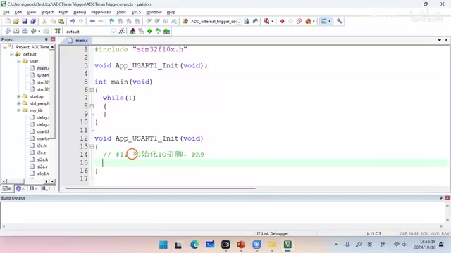
代码窗口配置 PA9 为 USART1 的 TX 复用输出，并开始初始化串口。 · 原片 10:53
所以呢我们应当把这个pa9呢给它初始化成，复用推挽输出模式，首先我们先开启啊GPA的一个时钟。
啊这样呢我们这个GPA的时钟就开起来了，然后呢我们需要对pa9进行初始化。
给这个结构体呢赋一个初值，
然后第一个成员我们填g p l pin9，
第二个成员呢用来选择模式，这个模式呢就是AFPP，
第三个成员呢，用来设置这个IO引脚的最大输入速度。比如说我们选一个2 MHz，然后我们调用这个GPIO_Init，对我们的这个pa9这个引脚呢做一个初始化。做完这一步之后，第二步我们需要开启UART1的时钟。怎么去开启它的时钟啊。还是调用这个RCCAPP2prefer clock cmd。然后里面的参数呢就填RCCABBR，Prefer use that1 enable，这样呢就开启了我们串口一的一个时钟。
然后第三步呢就是配置串口的参数。
这个参数呢我们需要使用USERINIT，这个编程接口进行配置，首先呢，我们先为这个编程接口，声明一个结构体类型的变量，
给这个变量也是要赋一个初值，给赋个初值零，然后我们开始填写这个变量的一个内容，首先啊第一个波特率，我们随便指定一个波波特率，比如说1115200，然后这个硬件流控呢不需要使用硬件流控。所以我们填now，那第三个成员use that mode呢，
我们填这个user mode tx，因为我们只需要向外发送数据，所以我们填TX就可以了。然后第四个成员priority，用来设置这个奇偶校验的，我们不需要使用奇偶校验，再往后呢这个stop base用来设置停止位的长度。我们选择移位停止位就可以了。
最后一个成员word length，用来设置我们这个数据位的长度，我们选择八位数据位，然后我们就可以调用u that init，对我们的u that11进行初始化了，
这样呢我们这个参数配置完了，最后一步呢就是去闭合串口的总开关。调用这个UART杠CMD啊。去闭合它的这么一个总开关，第一个参数填u that1，第二个参数来填INA保，这样我们这个串口就初始化完了，下面呢我们把这个初始化的函数，放到main方法里面去调用一下，调用完这个函数之后，我们需要测试一下，我们这个初始化到底有没有成功，那怎么去测试呢，我们还是发送一个hello world吧，那为了发送这个hello world呢，我们需要使用到之前我们写的一段代码，就是发送字符串的那个代码，它就在我们这个UART点H这个头文件里面。这是我们之前自己写的这个代码。
配置 TIM1_TRGO¶
然后我们就可以调用my user。send string去发送这个hello world字符串了对吧。第一个参数呢填user1，第二个参数呢就是我们要发送的这个嗯字符串。当然你发送别的字符串也可以，我们这里只是用来测试哈。现在呢我们按左上角的第二个按钮进行编译。编译一下我们的代码，这个代码呢没有错误，也没有警告，然后我们按这个按钮，把这个代码呢下载到单片机当中嗯，请大家打开这个串口调试助手哈。我们简单设置一下，这个串口调试助手的一个参数，首先呢我们先选择串口号，然后波特率啊。校验位，数据位停止位，还有这个硬件流控呢跟刚才的设置保持一致，也就是115200没有校验位，数据为八位，停止位，移位不使用硬件流控，然后我们点击这里的打开，打开这个串口，这里的接收设置设置呢，我们选择ask，也就是以字符的格式去接收呃发来的数据。然后现在我们就按一下，我们单片机上的复位按钮，这个时候呢我们就会在屏幕上看到了，有一行字符串，这个就是hello world，就是我们发的那个字符串，这就证明我们刚才写的这个初始化代码，是没问题的，刚才我们已经验证了上面的这个初始化的代码，确实是没有问题的，所以我们把这一行就是测试的这行代码。来给它注释掉，因为本次实验呢，我们需要使用到这个定时器一的TRGO，作为我们ADC的一个外部触发信号，所以第三步呢，我们就来配置一下这个定时器一的TRGO。现在呢我们回到我们的代码，我们找到这个main点C文件的顶部，我们在这个main点C文件的顶部呢声明一个函数，比如说给它起个名字叫做app tier one in it。这个函数呢就是用来初始化，我们定时器一的这个TRGO的，我们复制这个函数的原型，然后放到文件的最底部对它进行实现。。
我们就把这个定时器一初始化的代码，写到这里边就可以了。在编写这段代码之前呢，我们首先来梳理一下这个TRGO，信号产生的一个思路，我们刚才分析过，我们需要把这个TRGO呢设置成update模式。这个update模式呢，就是每当下面的这个时基单元，产生一个update事件的时候，这个位置呢就会出现一个脉冲信号对吧。所以呢我们想要产生这个TRGO，必须得先设置一下下面的这个时基单元，我们来看一下这个时基单元应该怎么去设置哈。主要分成这么几步，首先第一步，我们需要使能这个时基单元的一个时钟，我们知道我们使用的这个定时器是定时器一，那它跨是挂载在这个APP2总线上的，然后它的时钟呢，就应当从这个APB2的时钟上去取，也就是这个PCLK2这个时钟，所以呢这个时钟信号的频率就是PC2，k 2×1，
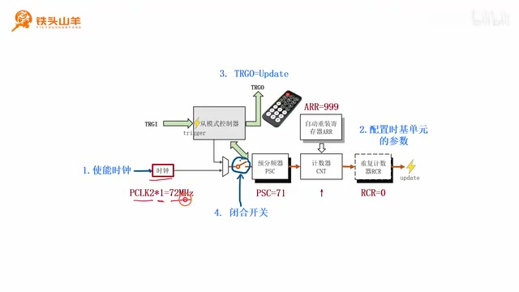
定时器参数示例采用 PSC=71、ARR=999、RCR=0，以 72 MHz 时钟产生 1 毫秒更新事件。 · 原片 17:10
也就是72 MHz，然后我们需要设置一下后边的这么一些参数，包括预分频器PSC的值，自动重量寄存器AR的值，还有这个重复计数器RCR的值，那我们把这个PSC的值呢设置成71，也就是预分频器的分频系数呢，就是71+1=72。那72 MHz进行72分频，得到的这个频率呢就是1 MHz，1 MHz的这个时钟信号呢周期就是1 微秒。然后我们再把这个AR的值设置成999，那么这个定时周期是不是就是1000啊。就是999+1=1000，我们把这个重复计数器RCL的值设置成零，那么1000倍的1 微秒是多少呀。是不是就是1 毫秒啊。所以这里呢每1 毫秒产生一个update事件，那么TRGO 上，是不是就是每1 毫秒产生这么一个脉冲信号啊。最后呢，我们还需要闭合这个时基单元里的这个开关。那这个时基单元呢才能开始工作，那这四步呢就是我们配置定时器的一个思路。下面呢我们就按照这个思路去编写我们的代码。。
我们按照刚才的思路呢去编写这个代码，首先第一步就是使能定时器一的时钟。要想使能它的时钟呢，我们就得调用这个RCCABB2，Prefer clock cmd，第一个参数填RCCABB2，Prefer，
定时器一第二个参数呢填ea报，这样呢这个时钟就开起来了，然后第二步呢，我们需要配置定时器一的时基单元。要想配置这个时基单元呢，我们得调用这个tm tam base init这个编程接口。那这个编程接口呢，第二个参数需要使用一个结构体，指针类型的这么一个变量，所以呢我们得用这个类型的去声明一个变量。
给这个变量起一个名字，
然后我们给这个变量的成员赋值，
首先第一个成员呢是clock division，这个呢我们用不到，我们就不需要设置了，然后第二个成员呢是counter mode，用来设置我们计数器的技术方向，到底是上级数，下级数还是中心中心对齐，我们选择这个上级数，也就是COUNTEO的up，这就是上级数，然后第三个成员叫做period，period呢用来设置这个定时器的定时周期啊。我们设置成999，然后第四个成员呢是PREULAR，用来设置PSC的值，我们把它设置成71，然后再往后这个reputation counter，用来设置重复计数器RCL的值，我们把它设置成零，那这里不要忘记啊。这个结构体类型的变量呢，我们先给它赋个初值零，如果不赋初值零的话，可能会出现错误，然后我们把这些东西填好之后，我们就把它作为参数填到哦。我们下面的这个编程接口里边，这样呢，我们这个定时器E的时基单元就配置完了。第三步呢，我们需要把这个TRGO的模式设置成update模式。我们需要使用t m select output trigger。。
注入序列相关编程接口¶
这个select output trigger呢，就是用来选择TRGO的一个来源的，一个模式的，第一个参数呢我们填time one，第二个参数呢我们填这个t m t r g o source。update这个选的就是update模式，最后一步，我们是不是就需要开启这个定时器，一的一个开关啊。
我们调用TMCMD第一个参数填TM1。第二个参数呢填EABLE，那这样我们就把这个总开关给它闭合上了，然后啊到此为止呢，我们这个定时器一的初始化就完成了。我们通过这个初始化呢，已经在这个TRGO 上产生了，以毫秒为间隔的这么一个脉冲了，所以下面呢我们把这个写好的函数复制一下。放到我们这个main方法里边去调用，我们把它放在这里的第二行，到这里呢我们这个电路连完了，然后串口呢也初始化完了，定时器E的TRGO呢我们也配置好了，下面呢我们就开始编写跟ADC相关的这些代码。那因为本节课呢我们需要使用到这个注入序列，所以在编写这个代码之前呢，我们先来学习一下，跟注入序列相关的一些编程接口，首先呢我们先来回顾一下，在上期视频的过程中呢，我们使用的是这个常规序列，所以我们上期视频学习的这个编程接口呢，主要跟这里的这个常规序列有关，而本期视频呢为了练手，我们使用这个注入序列，所以呢我们介绍的这个编程接口呢，主要和注入序列有关，一共是这么几个编程接口，下面我们逐一来介绍一下，这些编程接口的一个含义，首先第一个编程接口叫做a ADC injected，Sequence length config，其中这个injected呢是注入的意思。这表示它是和注入序列相关的一个编程接口。然后这里的sequence length呢，代表这个序列的长度，所以这个编程接口的作用呢，就是用来设置我们注入序列的一个长度的。比如说我给大家举一个例子哈。对于本期视频来说呢。
我们只使用到了pa0这个引脚，也就是通道零，我们需要把这个通道零呢，写入到这个注入序列的第一行，所以对于这个注入序列来说，它的长度是不是就是一啊。所以在编程的时候呢，我们需要调用这个编程接口，把我们这个注入序列的长度呢给它设置成一。然后我们再来看第二个编程接口，第二个编程接口呢叫做AD c injected channel config。这个编程接口呢用来配置注入序列的通道。
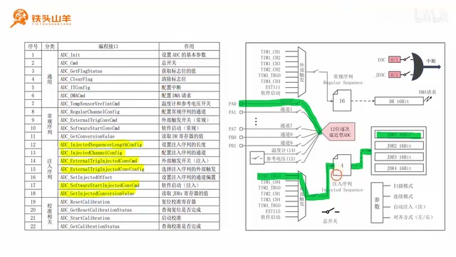
接口清单突出注入序列长度、通道、外部触发开关及触发源配置等函数。 · 原片 22:50
也就是把这个我们通道的信息呢。给它写入到这个注入序列当中，比如说对于本次实验来说呢，我们需要把通道零，然后10.24 个周期，这些信息呢给它写入到注入序列的第一行。那怎么把这些信息写进去啊。就是通过调用这个编程接口，然后我们再来看第三个编程接口，第三个编程接口呢叫做AD c external，Trigger，Injected convern cmd，其中这个external呢代表的是外部，trigger呢代表的是外部是触发，然后这个injected呢代表的是注入，这个CMD呢代表的是一个开关，所以这个编程接口呢，就是用来控制外部触发信号的一个开关的。我们来看这里是我们的注入序列，这是它的外部触发信号，然后中间的这里呢就是这个开关，所以呢这个编程接口就是用来控制这个开关的，闭合和断开的，然后再往后呢，这里是AD c external trigger，Injected conversion configure，那这个编程接口呢用来配置啊。用来配置我们注入序列的这个外部触发信号，我们需要在这里的这八个信号里边，选择一个作为这个注入序列的外部触发信号。对于本次实验来说呢，我们需要使用定时器一的这个TRGO，所以我们在编程的时候呢，就调用这个编程接口，去选择这个定时器一的t r go就可以了。然后再往后这个编程接口呢叫做AD c software。Start injected convern c m d，这个software呢是软件的意思，start呢是启动的意思，所以这个编程接口的作用呢。
初始化 ADC 注入序列¶
就是使用软件方式去启动这个注入序列。比如说我们来看这个位置，这个就是软件启动它的作用呢，就是通过这个位置向我们的这个注入序列呢。发送一个脉冲，然后我们再来看最后一个编程接口，最后一个编程接口呢叫做ADC，Get injected convern value，那这个编程接口的作用呢，就是去读取我们注入序列转换的一个结果，其实呢也就是去读取JDR寄存器的一个值。我们来看对于我们的这个注入序列来说呢，它有四行，也就是这么四行，每一行呢对应一个通道，那这个通道转换的结果呢，就会分别被保存到后边的四个JDR寄存器当中。而我们调用这个编程接口的作用呢，就是从里边的这个JDR寄存器里边，把这个结果呢给它读出来，那以上呢就是这些编程接口的一个含义了。刚才呢我们已经把这个跟注入序列相关的编程，接口呢给大家讲完了，下一步呢我们就开始对这个ADC进行编程，首先呢我们先对ADC进行初始化，那跟之前不同，之前呢我们是初始化的ADC的常规序列，这次呢我们来初始化ADC的注入序列，我们可以把初始化ADC的这个工作呢，给它分成下面这么五个步骤，关于这些步骤呢，上期视频我们已经都学习过了，下面呢我们来回顾一下这些步骤，首先第一步就是去初始化ADC的IO引脚。那对于本次实验来说，我们还是把这个光敏传感器模块接入到了。我们这个ADC的通道零，这个通道零对应的IO引脚就是PA0。所以呢我们需要把这个PA0，给它设置成模拟模式，我们回到这个man点C这个文件，然后在文件的顶部先声明一个函数，叫做app AD c in it，这个用来初始化ADC，然后我们复制一下这个函数的原型，放到文件的顶底部进行实现，然后我们要编写的第一步的代码就是，初始化pa0，
把这个pa0呢给它初始化成模拟模式。。
我们首先呢先来开启GPA的时钟。
啊然后我们声明一个结构体类型的变量。
对这个变量进行赋值，首先呢这个g p l ping我们填g p l ping0。
然后模式我们选择模拟模式。
这个就是模拟模式啊。大家不不要忘记了，给上面这个地方赋一个初值零，
因为是模拟模式，所以最大输出速度我们就不需要选了，我们直接调用这个GPIO_Init，对这个PA0进行初始化，
刚才呢我们已经把这个IO引脚给他，初始化好了，然后第二步呢我们需要为ADC去配置时钟。我们来看左边的这么一棵时钟树，我们的ADC模块呢，就位于时钟树的这么一个位置，它从PCLK2上取得时钟，但是呢在PCLK2和ADC模块之间呢。这里还有一级分频器，我们需要配置这个分频器，让输入到ADC1和ADC2的这个时钟，
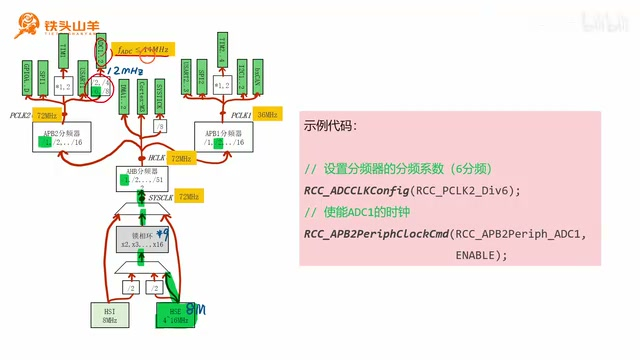
ADC 时钟树处将 PCLK2 的 72 MHz 经六分频得到 12 MHz。 · 原片 27:40
频率呢小于14 MHz，所以呢这里我们选择的是六分屏，72 MHz除以六之后，得到的这个频率呢是12 MHz，所以此时输入到ADC的这个时钟，频率呢就是12 MHz，我们先来配置一下这个分频器，我们调用的编程接口呢是RCCADC，Clock config，然后这个参数呢写六分频，那配置完这个分频器之后，我们需要使能这个ADC1的一个时钟，我们调用RCCAPB2prefer clock cmd，来使能ADCE的一个时钟，第二步，配置ADC模块的时钟。。
我们做一个六分屏，然后再调用RCCABB2prefer clock cmd。来开启我们这个嗯ADC1的一个时钟。这样的话，我们这个ADC模块的时钟就配置好了，配置好这个时钟之后，下一步第三步我们需要使用到上期视频，我们学习过的一个编程接口，就是个ADCINIT这个编程接口，使用这个编程接口呢，来配置一下ADC的一个基本的参数，首先我们先来看一下左边的这个示例代码，在左边的这个示例代码里边呢，我们调用了这个ADCINIT，对我们的ADC的基本参数进行配置，然后因为这个ADCINIT的第二个参数呢，是一个结构体指针类型的变量，所以呢我们先在上面使用这个结构体类型，声明了这么一个变量，并给它附了一个初值零，然后中间这一部分呢，我们就是给这个变量的成员呢给它赋值，一共有这么几个成员，首先第一个成员abc continuous converter mode。这个用来选择连续模式，这个连续模式呢就对应了我们这里的这个模式。因为我们还没有学习过这个连续模式，我们也不需要使用它，所以呢我们这里就填DC a able，去关闭掉这个模式就可以了。然后第二个成员呢叫做AD c data online，这个a abc detail line呢用来设置啊。我们这个结果寄存器里边的一个对齐方式，到底是左对齐还是右对齐，对于我们这个JDR寄存器来说呢，它同样受到这个对齐方式的影响，如果是左对齐的话，那么这12个比特位呢就靠左写，就写在这边，如果是右对齐的话，那这12个比特位呢就写在右边，就靠这边写，那本次实验呢我们使用的是这种右对齐的方式，这种右对齐的方式呢是最常用的，也是用起来最方便的，然后下面的这个成员叫做ADC，Excel trigger convern，这个用来选择常规序列的外部触发信号，也就是这里的这个外部触发信号，那本次呢我们使用的是注入序列。
所以呢我们这个外部触发信号，随便给他选就可以了。我们选比如说我们选择这个软件启动，然后下面的这个成员AD c mode，用来设置双ADC模式，这个双ADC模式呢指的是两个ADC。ADC1和ADC2，他们两个配合起来使用，那这个模式呢我们也用不到，所以呢这里我们也不需要设置，然后再往后呢是这个AD c number of channel。这个呢用来设置常规序列的通道数，也就是上面的这个常规序列里，这16行我们到底使用前面的几行。那因为我们用不到这个常规序列，所以我们这里设置一个零或者是一就可以了。随便设置这个没关系的，因为我们用不到这个注入序列，然后再往后呢，这里有一个a abc sa scan cover mode，这个代表扫描模式，这个扫描模式呢，也就对应了我们参数里边的这个模式，这个扫描模式呢我们下期视频才会用到，所以呢这个模式呢我们也不用设置，我们写一个disable就可以了。那这就是这些参数的一个含义啊。下面呢我们来编写一下这个代码哈。首先写一下注释，第三步，我们是配置ADC的基本参数。好我们要使用到的编程接口就是这个a abc in it，那第一个参数呢我们填ADC1，第二个参数呢是一个结构体指针类型的变量，所以呢我们需要为他声明这么一个结构体。
啊然后给这个结构体呢还是附一个初值零嗯。我们给这个结构体里面的成员呢再进行赋值，第一个程序员呢是continuous mode，我们填disabled表示不使用这个连续模式对吧。把连续模式给它关了，然后第二个呢叫做AD c data line，我们使用右对齐的方式，然后第三个呢就是excel trigger convern，这个代表ADC的这个常规序列的外部。触发信号的一个选择，那我们用不到这个常规序列，我们随便给他复制一个软件触发就可以了。我们上一期视频是用的就是这个软件触发，然后第四个成员呢叫做AD c mode。
这个用来设置双ADC模式，我们不需要使用这个双ADC模式，所以呢我们给他设置一个independent，也就是两个ADC是独立的，然后再往后这里是这个number of channel啊。这个呢用来设置常规序列里边的，这个通道的数量啊。我们给他写个一就好了。随便写，因为用不到那个最后一个成员呢叫做ADC。Scan convermode，这个用来设置扫描模式，这个扫描模式呢我们也用不着，所以填一个disc able，然后这些成员都复制完成之后，我们把它作为参数给它填进来就行了。配置完这个ADC的基本参数之后，下面呢我们再针对本节课，我们要讲的这个注入系列做一些额外的设置。首先我们先回忆一下哈。刚才呢我们调用了这个ADCINIT，这个编程接口，对ADC的基本参数做了一个设置，但在设置这个ADC基本参数的时候，我们连带着把这个常规序列的一些参数，也给它设置了，这些参数呢就包含了这个常规序列的一个长度。然后还有这个常规序列，外部触发信号的一个来源，我们把它选择成了软件启动的这种方式对吧。但是对于我们本节课所使用的这个，注入序列来说呢，这些参数我们还都没设置，所以呢我们需要单独的把这些参数给它设置好，这些参数呢就包含了第一个，设置这个序列的长度，我们把这个注入序列的长度呢设置成一，我们使用的这个编程接口呢，就是这里的AD c injected sequence length config，用它把这个注入序列的长度给它设置成一。然后第二个要设置的地方呢，就是这个外部触发信号的一个来源，我们需要选择定时器E的TRGO，作为这个注入序列外部触发信号的一个来源，所以呢我们需要调用这一个编程接口。也就是AD c is tural trigger，Injected conversion configure，来把定时器E的TRGO选做，我们这个注入序列的一个外部触发信号，然后第三步呢就是闭合这里的这个开关。也就是调用这里的AD c external trigger。。
injected的CONVERNCMD来闭合这里的这个开关。好下面呢我们来设置一下这些参数哈。写一个第四步，第四步呢是配置注入序列。
得额外参数，
啊。首先我们先来设置一下，这个注入序列的一个长度，A d c injected sequence，Llength config，把它设置成一，
然后呢我们再来配置一下这个ADC的外部触发。注入序列的外部触发信号的一个来源，
嘶把这个来源呢设置成定时器一的嗯。定时器一的TRGO，
Its turn or trigger injected，Conversion，Injected，convert e t r u啊。选择这个，
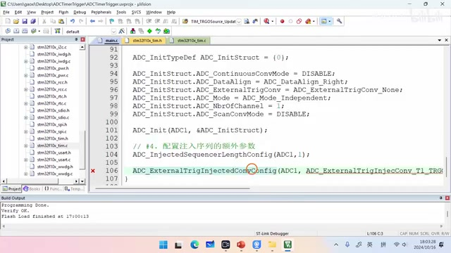
代码为注入序列选择 TIM1_TRGO，并闭合注入序列外部触发开关。 · 原片 35:35
最后呢我们就是去调用AD c external。trigger convern cmd啊。去闭合这个注入序列的一个开关。
啊这样呢，我们这个注入序列的额外参数就已经配好了。刚才呢，我们已经把这个注入序列的一些额外参数，给大家配置好了，然后下一步呢，我们就是需要把通道零的这些信息呢，给它写入到ADC的第一行当中，那跟通道零相关的信息呢，就是通道零的这个编号，然后再加上10.24 个采样周期。我们使用的这个编程接口呢，就是AD c injected channel configure，这个编程接口我们来写一下代码，A d c injected china config。第一个参数填ADC1，第二个参数呢填通道的编号，我们使用的是通道零，对吧。我们连接的是PA0。
读取转换结果并发送到电脑¶
所以使用的是通道零嗯，然后然后第三个参数呢是rank，这个rank呢就表示我们把呃，通道零的信息写到第几行，我们写的是第一行，所以这里写一，然后最后一个呢就是这个采样时间，我们使用10.24倍的这个周期，但是呢，但是呢这里没有跟10.24 个周期一样的。所以呢我们就选择一个最接近的，就是这个13.5 个周期就可以了。
那配置好了上面的这些参数之后，最后一步呢，我们就是去B和ADC的一个总开关。我们来看右边的这张图哈。我们要闭合的这个总开关呢，就是这里的这个开关哦，而我们要使用的这个编程接口呢，就是这里的ADCCMD，我们用它来闭合这个总开关，所以呢我们这个第五步要写的事情，就是闭合总开关，也就是调用ADC杠CMD，第一个参数呢填ADC1，第二个参数呢填INA保，到此为止呢，我们这个ADC就完全初始化完了，然后我们把这个ADC初始化的这个函数呢，给它复制一下，然后找到前面的这个main方法，我们在main方法的第三行对它进行调用。刚才呢，我们已经把所有的这些准备工作都做完了，最后一步呢，我们就是去读取ADC的一个测量结果，然后呢把这个测量结果给它发送到电脑上，我们在电脑上呢使用曲线的形式，把我们的这个测量结果呢给它显示出来，现在呢我们来分析一下，我们怎么从这个ADC里边，把这个测量结果给他读出来，首先呢因为我们使用的是注入序列，而且呢，我们把这个通道零呢，写入到了注入序列的第一行，所以呢这个转换的结果，是不是应该保存在JDR1这个寄存器里面。所以我们在读取这个结果的时候呢，就应该从JDR1这个寄存器里面，把结果读出来，我们使用的这个编程接口呢就是ADC，Get injected convern value，然后因为我们本次实验呢跟之前不同，我们选择的是T额定时器一的这个TRGO呢。。
作为这个外部触发信号的一个来源，这个定时器一的TRGO呢它是自动产生的，每1 毫秒呢会发送一个脉冲，所以呢我们就没必要手动的去产生这个，TRGO 信号了，我们所需要做的呢就是等待这个转换的完成。那怎么去等待这个注入序列转换完成呢，就得查上面的这个GUOC标志位，我们需要等到这个goo ec标志位呢从零变成一。那么就标志着这个注入序列转换完成了。然后呢我们把这个结果给他读出来，再然后呢我们对这个GOC呢给它清零，清零呢是为下一次读取做准备，然后读出这个数据之后，我们再把这个数据呢给它转换成电压值。然后给他发送到电脑上就可以了。下面呢我们就要按照这个思路去编写，我们的程序，我们需要把这个数据读取的程序呢，写在这个main方法的while循环里面，首先第一步呢我们就是去等待可。
常规序列啊。不是是注入序列转换完成。怎么去等待它转换完成呢，我们使用一个while循环哈。在while循环里面不断的去调用ADC，Get flex status，去获取这个ADCGUC标志位的这个值。
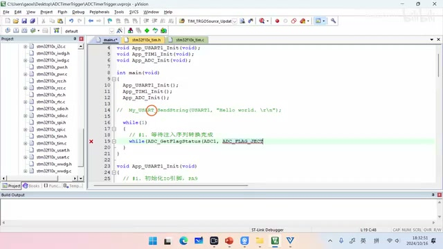
主循环等待注入完成标志，读取 JDR1、清标志并换算电压后通过串口发送。 · 原片 39:50
直到这个值呢从reset变成set为止啊。当它变成set的时候，就证明我们这个注入序列转换完成了对吧。所以呢第二步我们去读取转换的结果。
额我们把这个转换的结果呢，给它保存在这么一个叫做JDR1的变量里边。
AD c get injected convern value啊。用它来获取我们这个转换的一个结果。第二个参数呢填AD c injected的channel one。。
这个a abc injected china one呢。就代表我们读取的这个JDR呢是JDR1。如果你填这个injected channel to呢，就是读的这个JDR2，以此类推啊。这里有四个寄存器，我们选的是第一个寄存器，然后把这个结果读出来之后呃，第三步呢我们就是要清除呃JUC这个标志位。当然你把这个GUC标志位的清除工作呢。放在读取之前也是没问题的，这个顺序没所谓，只要记得最终把它清掉就可以了。我们调用abc clear flag，去清除这个JC的标志位，
然后把这个标志位给它清除，完成之后，第四步呢我们就是嗯去把把结果转换成电压。
怎么去转换成电压呢，我们就是用JDR的这个值，去乘以一个ADC的分辨率，这个ADC的分辨率呢怎么算，就用3.3伏对吧。除以4095，这个得到的就是分辨率，然后我们把这个分辨，把这个电压值呢给它保存到这么一个变量里面。
给起个名字啊。保存到这么一个变量里边，然后下一步呢，我们就需要通过串口把这个发送出去。把结果发送出去，
我们发送这个数据的格式是这样的哈。我们需要这么去发送，就是调用my user print f。然后第一个参数呢填UZ1，第二个参数呢填这个发送的格式，我们需要使用一个无符号三位啊。需要使用一个三位的浮点数，然后后边给它加上一个杠N，这个杠杠N呢就是换行，然后呢我们需要把这个voltage给他发送出去，就是用这么一个格式去发哈。。
修正触发接口并编译下载¶
配置波形软件并查看结果¶
然后这样呢我们整个的代码就写完了啊。需要给大家改正一下哈。下面呢我有一行代码写错了，就是在初始化ADC的时候，我们来找一下，这是初始化ADC的代码对吧。然后我们不是为这个注入序列，去配置了一些额外的参数吗。其中这个位置这里的AD c is tural，TRI个convert c md，我们本来是想闭合下面的这个开关的对吧。但是呢这个编程接口，闭合的其实是常规序列上面的这个开关，我们把这个编程接口呢给他改一下，正确的编程接口呢应该是这个。
这个编程接口才是闭合下边的，这个注入序列的开关啊。所以我们把它改过来，
然后这样呢我们这个代码就完成了。现在呢我们来编译一下这个代码，按右上角的第二个按钮进行编译，编译完成之后呢，我们按这个按钮，把这个代码呢下载到单片机当中，为了在电脑上显示这个图像呢，我们需要使用一个叫做offer plus的这么一个软件。这个软件的安装包呢，我已经给大家大家放在了这个百度网盘里面，大家把它下载下来进行安装就可以了。那安装好了这个软件之后，我们需要设置一下这个软件的一个参数，我们点击软件最左边的这里有一个红色的按钮。对吧。一点这个红色的按钮呢，这里就弹出了一个这样的一个窗口，然后我们来设置一下这里边的这些参数哈。首先这个数据引擎呢选择这个file water，这个数据引擎，
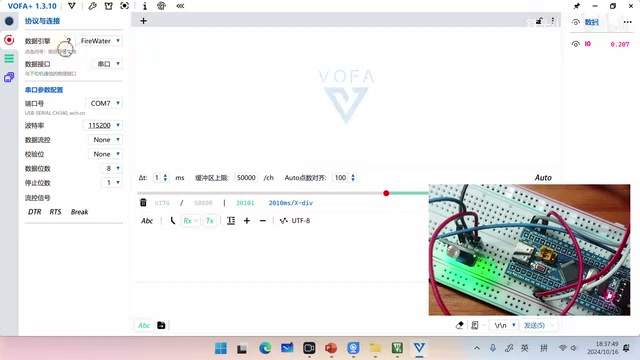
波形软件的串口设置面板包含串口号、115200 波特率、8 位数据、1 位停止位和无校验。 · 原片 44:00
这个就是一个数据格式而已，然后呢，这个数据接口我们选择使用串口去接收数据，然后下面呢是串口的一些配置，这个串口号呢我们选择USB 转 TTLO，那个模块的一个串口号，波特率呢设置成115200，数据流控呢不使用数据流控，然后这个校验位呢也不使用校验位，这个数据位呢选择八位，停止位呢选择一位，然后这样呢这个参数就设置好了，刚才呢我们不是使用了这个串口调试助手软件。已经把这个串口打开了吗。现在呢我们先把这个串口给它关闭哈。。
因为这个串口呢只能被一个软件所打开，所以呢我们把这个关闭，然后把它关掉，然后我们再按左上角的这个按钮，在我们这个软件里面把这个串口给它打开，点击一下，当它变变成这种啊亮的这种颜色了之后呢。就表示我们这个串口已经连接成功了，然后现在呢我们按一下这个单片机的复位按钮，按一下就可以看到我们这个单片机呢，在不停的给我们的电脑发送数据对吧。可以看到这里不停的在发送数据，那我们怎么把这个数据给它显示到屏幕上呢，我们可以这么去做啊。我们首先按一下这个左边的这个控件。然后在这个空间里面呢，找到第一个就是这个波形图，
拖，拖进去之后，我们右键，然后找到一点的填充额，选第一个选项，这样呢，我们就把这个图表呢给它填充到这个屏幕上了。然后我们再次右键选择这里的Y轴。Y轴，这里呢一共有一个输入数据，就是I0，我们选择这个I0，那这样呢我们这个曲线是不是就已经保存到，
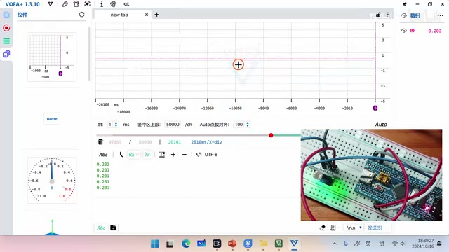
最终波形随光照变化；纵轴滚轮用于调整曲线显示大小。 · 原片 45:38
就已经显示到这个电脑上了，然后呢我们再改变一下这个光照强度，大家就可以看到这条曲线了，对不对，
如果你觉得这个曲线太窄了，你可以把鼠标放在这个纵轴上，然后移动这个滚轮去调节一下这个曲线的大小。我们关灯测试一下再开灯。对不对，就看到这个曲线的一个变化了，好的以上呢就是本期视频的全部内容了，感谢大家的收看，我是铁头山羊，让我们下期视频再见。